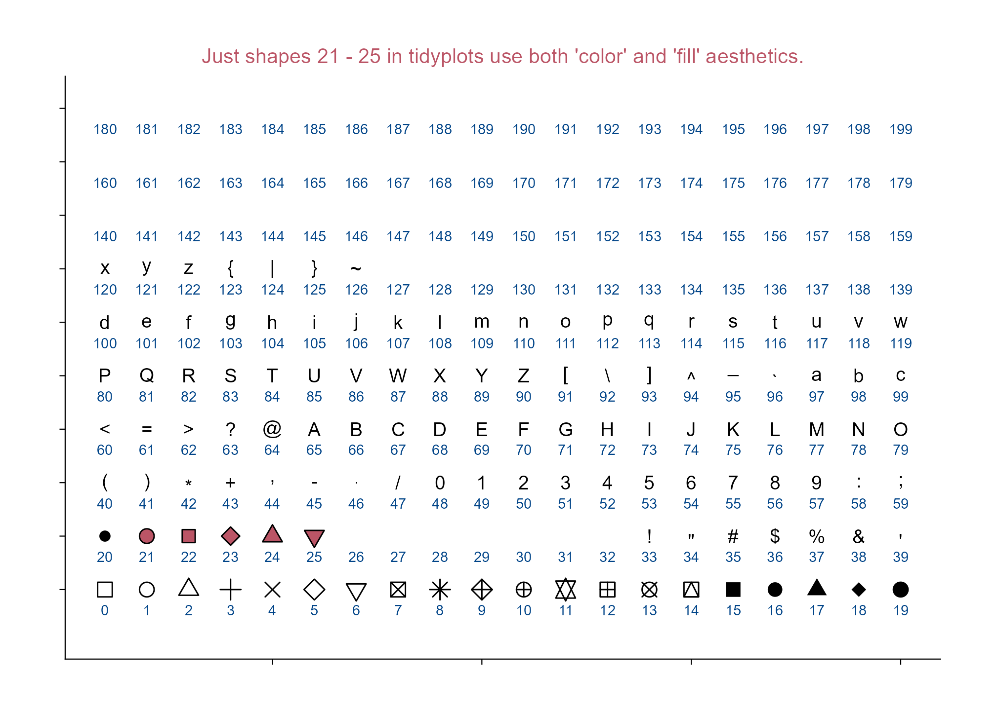
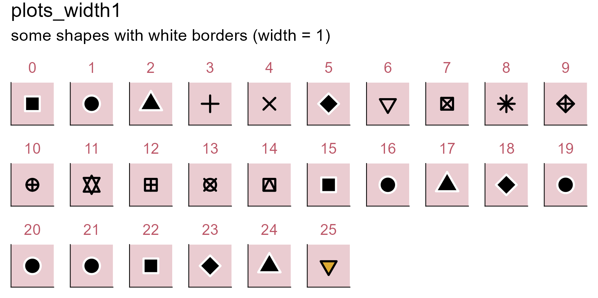
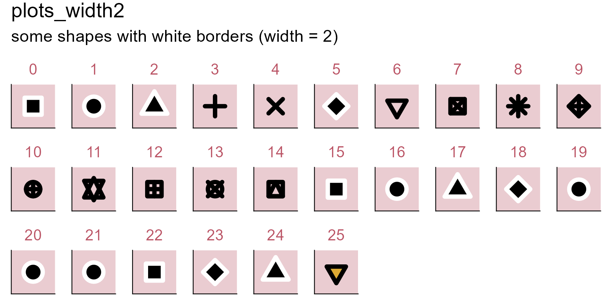

Type ?tidyplots::add_data_points in R console, you can view the help information of the function.
shape An integer between 0 and 24, representing the shape of the plot symbol.
Let’s see: which point shapes in tidyplots allow simultaneous use of color and fill aesthetics?
library(tidyplots)# Set a df for point plottingdf <- tibble::tibble(x =rep(1:20, length.out =200),y =rep(letters[1:10], each =20),shape =seq(0, 199)) # testing more numbers here# View top 10 rowsdf |> dplyr::slice_head(n =10)
# A tibble: 10 × 3
x y shape
<int> <chr> <int>
1 1 a 0
2 2 a 1
3 3 a 2
4 4 a 3
5 5 a 4
6 6 a 5
7 7 a 6
8 8 a 7
9 9 a 8
10 10 a 9
# Plotdf |>tidyplot(x = x, y = y) |>add_data_points(shape = df$shape, size =3, color ="#000000", fill ="#bb5566") |>add_annotation_text(text = df$shape, x = df$x, y = df$y, vjust =2.5, color ="#004488") |>adjust_size(width =150, height =100) |>adjust_y_axis(limits =c(0.3, NA)) |>remove_x_axis_labels() |>remove_y_axis_labels() |>remove_x_axis_title() |>remove_y_axis_title() |>add_title(title ="Just shapes 21 - 25 in tidyplots use both 'color' and 'fill' aesthetics") |>save_plot(filename ="images/point-shape-color-fill.png",view_plot =FALSE)

Point shapes in tidyplots.
7.2 Point white borders and width
library(tidyplots)df <- tibble::tibble(x =1, y =1)# Viewdf
# A tibble: 1 × 2
x y
<dbl> <dbl>
1 1 1
# Define a stylemy_style <-function(x) { x |>adjust_size(width =10, height =10) |>remove_x_axis_labels() |>remove_x_axis_title() |>remove_x_axis_ticks() |>remove_y_axis_labels() |>remove_y_axis_title() |>remove_y_axis_ticks() |>adjust_theme_details(panel.background = ggplot2::element_rect(fill ="#bb55664d"))}# Set a function to plotgenerate_plot <-function(point_shape, white_border_width) { df |>tidyplot(x = x, y = y) |>my_style() |>add_data_points(white_border =TRUE, size =3, stroke = white_border_width, # border widthcolor ="#000000", shape = point_shape) |># point shapeadd_title(title =as.character(point_shape))}# Plots with point shapes 0 - 25 (white_border width: 1)plots_width1 <- purrr::set_names( purrr::map(0:25, generate_plot, white_border_width =1),paste0("p", 0:25))# Plots with point shapes 0 - 25 (white_border width: 2)plots_width2 <- purrr::set_names( purrr::map(0:25, generate_plot, white_border_width =2),paste0("p", 0:25))# Wrap plots together and save(patchwork::wrap_plots(plots_width1, ncol =10) + patchwork::plot_annotation(title ="plots_width1",subtitle ="some shapes with white borders (width = 1)")) |>save_plot("images/point-white-borders1.png",view_plot =FALSE, width =140, height =70)(patchwork::wrap_plots(plots_width2, ncol =10) + patchwork::plot_annotation(title ="plots_width2",subtitle ="some shapes with white borders (width = 2)")) |>save_plot("images/point-white-borders2.png",view_plot =FALSE, width =140, height =70)


Some shapes can be with white borders.
Note
Some shapes become visually identical under this condition (i.e. when white_border = TRUE), such as shapes 0, 15, and 22.
All multi-panel figures throughout this book (except the figure in Section 3.4 and Section 4.15), due to differences in absolute dimensions, are combined using the patchwork package.
In general, patchwork can be used to combine seperate plots into a multi-panel figure and tag each panel, which is a common practice in scientific papers.
library(tidyplots)# View top 10 rows of the columns usedstudy |> dplyr::select(treatment, score) |> dplyr::slice_head(n =10)
# A tibble: 10 × 2
treatment score
<chr> <dbl>
1 A 2
2 A 4
3 A 5
4 A 4
5 A 6
6 B 9
7 B 8
8 B 12
9 B 15
10 B 16
# Plotp1 <- study |>tidyplot(x = treatment, y = score, color = treatment) |>add_median_bar(alpha =0.3) |>add_data_points_beeswarm(white_border =TRUE) |>add_sd_errorbar() |>add_test_asterisks(ref.group ="A", hide_info =TRUE)p2 <- p1
multipanel_1 <- patchwork::wrap_plots(p1, p2, ncol =2) + patchwork::plot_annotation(tag_levels ="A", title ="tags in uppercase letters (i.e. A, B)") & ggplot2::theme(plot.tag = ggplot2::element_text(size =12, face ="bold"))multipanel_1 |>save_plot("images/patchwork_multipanel_1.png",view_plot =FALSE, width =170, height =80) # width and height should be tailoredmultipanel_2 <- patchwork::wrap_plots(p1, p2, ncol =2) + patchwork::plot_annotation(tag_levels ="a", title ="tags in lowercase letters (i.e. a, b)") & ggplot2::theme(plot.tag = ggplot2::element_text(size =12, face ="bold")) multipanel_2 |>save_plot("images/patchwork_multipanel_2.png",view_plot =FALSE, width =170, height =80) # width and height should be tailored